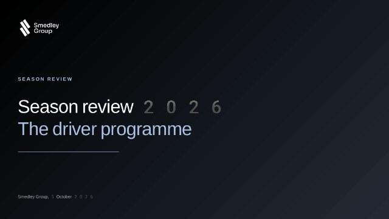
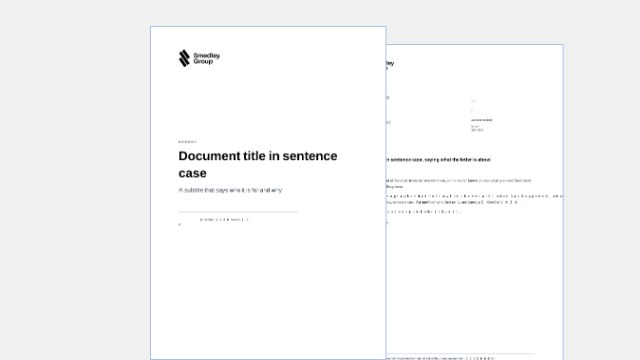
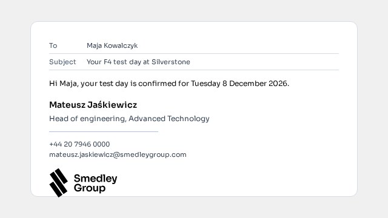
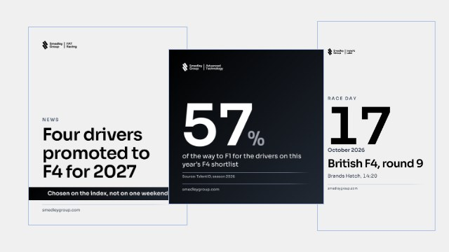

Point first
Lead with the conclusion. The reader should be able to stop after the first sentence and still act.
Foundations
The mark and its lockups, colour, type, voice, the one surface, pictures and the grid everything sits on.
A single drawn lockup in one colour, placed in the same corner at the same size every time. Its consistency is what lets everything else in the system move.
Ink on Canvas #F0F0F0
A three-bar diagonal glyph set left of a two-line wordmark. A full-height vertical divider separates Smedley Group from the division name, here Advanced Technology. The lockup is drawn as a single asset: never rebuild it from live text.
White on the signature surface
A 100 % white knockout on the black to navy gradient, on photography and on any value darker than Mist #8497B0. The logo is monochrome in both directions: it carries no colour of its own.
Ink on light grounds, white on anything darker than Mist
The cap height of the wordmark on every side
Clear space on all four sides equals the cap height of the wordmark, about the width of one bar of the glyph. Nothing enters this field: type, rules, image edges or charts. The lockup is never narrower than 110 px on screen or 30 mm in print.
Same size, same corner, every time
| Slides | Bottom-left on every slide, origin x 0.50 in, y 4.96 in |
| Size on a slide | 2.26 × 0.44 in, fixed |
| Clear zone below | 0.22 in to the slide edge |
| Interface | Top-left of the header, around 150 px wide |
| Minimum width | 1.20 in, 30 mm or 110 px |
Drawn in glyph units, on the 56 × 86 artboard
| Glyph | Three bars of one width on one pitch, inside a 55.0 × 87.0 envelope |
| Module | 23.75 |
| Long bar | 71.3 × 14.2, three modules |
| Short bars | 47.7 × 14.2, two modules, offset by one |
| Pitch and gap | 17.9 centre to centre, 3.7 clear |
Sora SemiBold, two lines
| Type | Sora SemiBold, two lines, leading 0.94, tracking −0.025 em |
| Divider | A full-height rule, 4.6 units wide and 62 tall, never a slash or a hyphen |
| Spacing | 16 units from glyph to wordmark, 17 either side of the divider |
| Glyph alone | Only as the app icon and favicon, 16 px at the smallest, never beside type |
Build it from the kit, never by eye
One mark for the group and one lockup per business. The glyph, the wordmark and the divider never change; only the name after the divider does. Every lockup is monochrome: ink on Canvas, white on the surface.
The group itself: corporate, investor and group-wide material.
Hardware and software engineering, for the group and for clients in motorsport, sport and automotive.
Sports data, simulation and modelling for fan engagement.
Driver development: funding drivers promoted from the league into Formula 4.
The global karting series, run by hubs and overseen from the UK.
Product Blue #ADB9CA, under the division only
TalentID
A product is named under the division on its title slide or cover, in Sora SemiBold in Product Blue, tracked −0.024 em. The lockup itself stays white. Product Blue sits on the surface only: on Canvas it falls to 1.7 : 1.
| Division name | Two lines, set in Sora SemiBold at the same size and leading as Smedley Group |
| Line break | Break where the name reads in two parts: Advanced / Technology, FAT Karting / League, FAT / Racing, Insight / Labs |
| Divider | Always present between the group and the business, 4.6 units wide and 62 tall |
| Order | Group first, business second. Never abbreviated, never stacked vertically |
| Colour | Ink or white, chosen by the ground. No business has a colour of its own |
| Files | Every lockup in white and ink, outlined, in Resources |
Fans, drivers and hubs meet FKL through its own identity: the FAT Pill logo, FKL Blue #0000FF and ST Rapid Black Extended, as set out in the FKL brand guidelines. Use the lockup above only where the group speaks about the league: investor and corporate material, TalentID and internal tools. On FKL's own material the group appears, if at all, as an endorsement. See Co-branding.
A near-monochrome palette: ink and navy for structure, one pale blue for light, and a tightly rationed green and red that carry meaning rather than decoration.
The spine of the system
Everything structural is built from Ink, Deep Navy and Pale Blue. The navies all derive from Steel; Mist and Pale Blue are the light that falls on them.
The canvas, panels and quiet text
The ground is Canvas, never pure white. White is for type reversed out of the gradient and for photo plates.
Used sparingly, always in pairs
Signal colours never appear as a surface, a background or a chart fill: only as short bold labels on their own tint. The palette carries no red, orange or yellow outside the negative pair.
How the palette becomes two themes
The light theme is the default: Canvas ground, Ink type, Slate and Steel for quieter text, Pale Blue hairlines. The dark theme sets the same parts on #10141A. Anything drawn in the signature surface (cards, menus, dialogs, toasts) carries the dark theme wherever it sits.
| Pairing | Use, contrast |
|---|---|
| Ink on Canvas | Titles and body copy. 18.4 : 1 |
| Slate and Steel on Canvas | Secondary copy and quiet labels. 9.4 : 1 and 6.8 : 1 |
| White on the gradient | Cards, the primary action, the strapline band. 14.5 : 1 at the navy end |
| Negative on its tint | Problems, errors. 5.3 : 1 |
| #007A3D on the positive tint | Gains on screen; #00B050 is too light for small type. 4.6 : 1 |
| Never | Mist or Caption for text on Canvas (2.6 : 1 and 2.3 : 1), signal colours as fills |
Sora in three weights, tracked tight at display sizes. The weight does the work that colour and rules do in other systems. No italics, no fourth weight, no second family.
Geometric grotesque, open licence
Regular may be set bold for emphasis inside a sentence. Uppercase is kept for two things: card titles and the eyebrow over a title.
Sora with tabular figures, never a mono family
| Measured values | Times, amounts and codes in Sora with tabular figures, so columns line up |
| Units | Always given, with a space: 0.18 s, 57 %, 1,040 mm |
| Tracking | Display sizes −0.024 em, the book's −0.68 pt at 28 pt. 16 px and below normal |
px, from the page title to the 11 px floor
Absolute sizes on a 10 × 5.625 in canvas, pt
| Role | Weight, size, leading | Tracking | Where |
|---|---|---|---|
| Cover headline | SemiBold 34.2, leading 34.2 | −0.68 pt | Product or division name on the title slide |
| Slide title | SemiBold 28, leading 34.2 | −0.68 pt | One per slide, sentence case, at y 0.44 in |
| Strapline | SemiBold 16 | 0 | White on the dark band |
| Lead statement | Regular 14, set bold | 0 | Full-width claim directly under a title |
| Section label | SemiBold 12 | 0 | Pill and column headers |
| Column header | SemiBold 11 | 0 | Above a divider |
| Card body | Light 10.5, leading 1.35 | 0 | Long-form copy inside a dark card |
| Body and bullets | Regular 10, leading 1.4 | 0 | Default running text |
| Card title | SemiBold 9 | 0.02 em | Uppercase, inside cards |
| Column subtitle | SemiBold 7 | 0.02 em | Caption #9AA0A8, under a column header |
| Card caption | Light 7, leading 1.3 | 0 | Two-line descriptor under a card title |
We write the way a good engineer explains a result: the point first, specific, calm. Plain words, full sentences, and numbers that mean something.
Lead with the conclusion. The reader should be able to stop after the first sentence and still act.
Numbers with units, names with places, dates in full. 0.18 s, not nearly there. FKL Łódź, not a hub. 26 September 2026, not 26/09.
Confidence comes from facts, not volume. Sentence case, no exclamation marks, no capitals for emphasis, no hype words.
| Moment | Write | Not |
|---|---|---|
| Headline | Maja is ready for an F4 test day this winter. | UNLEASH YOUR RACING POTENTIAL! |
| Data | 0.18 s off the F4 entry pace, closing by 0.03 s a session. | So close to greatness! |
| Error | The transponder ID is missing. Add it and save again. | Oops! Something went wrong. |
| Action | Add to F4 shortlist | Submit |
| Empty state | Sessions appear here after the first timed lap at a hub. | Nothing to see here yet :) |
| Strapline | Our model isolates performance from contextual factors. | Key findings |
One sentence, the conclusion
A strapline closes a slide or a view with what the reader should take away. One sentence, one idea, no punctuation beyond a full stop. It never restates the title, and a view carries one at most.
| Title | Data inputs |
| Strapline | Every session becomes a comparable measure of the driver |
| Not | Here are our data inputs |
| Speaking for | Tone, in the same plain words |
|---|---|
| Smedley Group | Considered and confident. The long view, stated once |
| Advanced Technology | Precise and measured. Show the method: what was measured, how, and how sure we are |
| Insight Labs | Clear and curious. The finding first, then the model behind it |
| FAT Racing | Direct and factual. Short sentences, present tense, names first |
FAT Karting League writes in its own voice, set out in the FKL brand guidelines: direct, bold and future-forward.
Everything dark in this system is the same 45° gradient with the same edge light. That single decision is what makes cards, tiles, circles and bands read as one object. The ground stays flat Canvas.
One fill for everything dark
| Angle | 45°, top-left to bottom-right |
| Stops | Ink #000000 at 0 % to Deep Navy #222A35 at 100 % |
| CSS | linear-gradient(135deg,#000 0%,#222A35 100%) |
| In the book | var(--sg-surface), or class .sg-surface with the edge light |
One fill does all the work: cards, icon tiles, the intelligence circle, the strapline band and the cover. Because it is angular rather than radial, shapes of any proportion sit together without the gradient breaking.
A 1 px stroke, pale at the top, dark at the foot
| Stroke | 0.5 pt on slides, 1 px on screen |
| CSS | linear-gradient(180deg,#8497B0 0%,#ABC0E4 53%,#333F50 100%), var(--sg-edge) |
It reads as a single light source above the page and is what separates a card from the canvas. No shadow, glow or bevel does that job.
Cards, tiles and the one circle, all in the same fill
Anything drawn in the surface takes class sg-dark, so the text, fields and buttons inside it read in the dark theme. The circle marks the centre of a process, once per view at most; it is the only surface that is not a rounded rectangle.
Pale Blue, solid to 83 %, then fading to nothing
A hairline that holds solid for 83 % of its length, then fades to zero. It sits under every section label and never closes a box: the fade is the point. Use .shead for a section header and hr.fade on its own.
The conclusion, dark or light
Dark: the signature surface with white Sora SemiBold, centred. On a slide it runs full bleed, 0.45 in tall at y 4.37 in, in 16 pt.
Light: solid Cloud #D6DCE5 with black type, 11 pt on a slide. Used when the area above is already dense with dark cards, so the band recedes instead of competing.
Every slide or view carries at most one band. It is the conclusion, not a caption.
| Never | A gradient at any angle but 45°, a radial gradient or glow, a tinted wash behind content, drop shadows or bevels, a second dark fill |
Documentary photography of the real environment: track-side, in the paddock, in the seat. Real people doing real work, in available light, with no filters and no stock gloss.
| Subject | Track-side, the paddock, in the seat. People first, then machines |
| Light and grade | Available light, true colour. No filters, no tint, no stock gloss |
| Shape | Hard-edged rectangles, 4.62 × 2.95 in in the two-up layout, or full bleed. No masks, cut shapes or rounded frames |
| Caption | White Sora SemiBold 14 pt (14 px on screen) over the lower left of the frame, with no plate |
| Other text | Beside or below the picture, never over it |
| The logo | White knockout on photography, clear of any busy passage |
| Facts | Real people named, real numbers sourced |
A 16:9 canvas with fixed margins, a fixed title position, a four-column field and a full-bleed conclusion band. Every slide is a variation on this frame, and every screen keeps its order.
| Slide size | 10 × 5.625 in, 16:9 |
| Background | Canvas #F0F0F0, solid, on every slide |
| Side margin | 0.46 in left and right |
| Title block | y 0.44 in, 0.46 to 0.55 in tall |
| Content | y 1.12 to 4.22 in |
| Strapline band | y 4.37 in, 0.45 in tall, full bleed |
| Logo | x 0.50, y 4.96 in, 2.26 × 0.44 in |
| Column origins | 0.46, 2.78, 5.10, 7.42 in |
| Column width | 2.05 in |
| Gutter | 0.27 in |
| Wide variant | 1.93 in columns at 0.44, 2.78, 5.11, 7.44 in |
Two-up slides split the grid down the middle: a 4.62 × 2.95 in image on one side, stacked label-and-content blocks on the other. Nothing but the band and full-bleed imagery touches the edge.
The same frame, measured by the window
| Ground | Canvas #F0F0F0, #10141A in the dark theme |
| Side margin | Page gutter 32 px, 16 px on phones; app padding 24 px, 16 px under 480 px |
| Title | The page title in SemiBold 32 at the top, with one quiet line of context |
| Content | The one lead element, then calmer sections, each opened by the divider |
| Columns | Four at most, with 16 or 24 px gutters; metrics two or four across |
| Strapline | One at most, closing the view, inside the margins |
| Logo | Top-left of the header, around 150 px wide, never under 110 px |
AppScreen lays out by its own width, from 260 px
Apps respond to the width of their own window, never the viewport, because an app may fill the screen or sit in a 260 px column of the desk. Nothing scrolls sideways.
At work
Drawings and data, the same system across every business, and how the mark moves.
Where something is measured, built or read, the system draws it plainly. Technical drawings sit on the Canvas in ink, measured in Steel; values are Sora with tabular figures; and green and red appear only where a number has gone up or down. The same rules serve a kart, a sensor housing and a results table.
Canvas, or the signature surface when reversed
Drawings sit on the page's own ground, with no grid behind them. The part is drawn in Ink, set out in Pale Blue hairlines and measured in Steel. Reversed on the signature surface, the part turns white and the measurements Pale Blue. Labels and values are set in Sora; a value that needs attention is set in the negative red, as text and nothing more.
Every drawing carries a title block: sheet, subject, place and date in ruled cells. Dimensions end in short ticks at 45 degrees, or straight ones, never arrowheads.
| On Canvas, reversed | Line | Use |
|---|---|---|
| Object line | Ink, 1.25 px; white when reversed. What exists: the outline of the part. | |
| Construction line | Pale Blue, 0.75 px. How it was set out: modules, envelopes, extensions. | |
| Centre line | Steel, long and short dash; Pale Blue when reversed. Axes and symmetry. | |
| Hidden or planned | Slate, dashed; Cloud when reversed. What is out of sight or not built yet. | |
| Dimension | Steel; Pale Blue when reversed. Short ticks at 45 degrees, or straight, never arrowheads. The value in Sora above the line. | |
| Callout | A dot on the part, a shelf to the label in the text colour. Balloons name items in a set. |
The kart in plan view, front at the top, dimensions in mm
The kart in Ink, centre and dimension lines in Steel outside it, one large figure per corner on a leader to its tyre. The rear surface temperatures sit above the 50 °C working window, so they are the only red on the sheet. The same drawing works for a chassis, a sensor housing or a simulator rig.
24 px grid, 1.5 px stroke, rounded ends and joins
Drawn like every other icon, on the same keylines. Hand tools lie on the 45 degree diagonal, head to the top right; instruments sit level, because they read true. Each tool sits white in an icon tile on the signature surface, never loose on the Canvas and never in a signal colour. Tool icons mark engineering work: setup, service, hardware and data. They live in the icon library with the rest.
| Lean | 45 degrees, head to the top right, hand tools only |
| Live area | 20 px inside the 24 px square, one idea per tile |
| Sizes | 16, 24, 32 and 48 px; 32 px tiles in interfaces, 48 px icons on plates |
Qualifying, FKL Łódź, cadet, 24 September 2026
| Pos | Driver | Best | Gap | Places | S1 | S2 | S3 |
|---|---|---|---|---|---|---|---|
| 1 | KOWMaja Kowalczyk | 1:02.418 | Leader | +1 | 20.904 | 20.771 | 20.743 |
| 2 | HARLeo Hartmann | 1:02.521 | +0.103 | −1 | 20.951 | 20.868 | 20.702 |
| 3 | MEHAarav Mehta | 1:02.977 | +0.559 | 0 | 20.887 | 21.101 | 20.989 |
Positions are rounded chips; the leader's takes the selected fill. Places gained since the last run read in positive, places lost in negative, as text. The fastest time in each sector is set in positive SemiBold.
Value, then unit, in Sora with tabular figures
Anything read off an instrument is set in Sora with tabular figures: lap and sector times, channels, units and axis ticks. Values keep a true minus and a fixed number of decimals so columns never jitter. A gain or a loss is told by the colour of the number, never by a filled bar.
A place in an order: a grid slot, a ranking, a sheet. A rounded chip in SemiBold with tabular figures; the leader or the current item takes the selected fill, the rest the quiet tint.
A value against a threshold: the subject in the text colour on the quiet track, the limit as a short mark in the accent. Over or under is said in words with a signal label.
Progress through a known sequence: done steps in the text colour, the current one half filled and SemiBold, the rest in the quiet tint. The last step needs no special mark.
One system serves the whole group. Smedley Group, Advanced Technology, Insight Labs and FAT Racing share the same palette, the same surface and the same type; only the division name in the lockup changes. FAT Karting League keeps its own brand.
What changes from one division to the next
Nothing in the look tells the divisions apart: not a colour, not a typeface, not a shape. The name to the right of the divider says who is speaking, and the work does the rest. A product takes its name in Product Blue under the division name, in a title on the signature surface, and nowhere else.
| Part | Everywhere in the group |
|---|---|
| Palette | Ink, navy and Pale Blue for structure; green and red only as labels |
| Surface | The Canvas ground and one 45 degree signature surface for everything dark |
| Type | Sora in Light, Regular and SemiBold, with tabular figures for numbers |
| Lockup | The glyph, Smedley Group, the divider and the division name |
| Product name | Product Blue #ADB9CA under the division name, titles only |
| Division | What it does | Typical material |
|---|---|---|
| Smedley Group | The group itself | Investor and corporate material, group policies, this book. The glyph and Smedley Group alone, with no division name |
| Advanced Technology | Hardware and software engineering for the group and for clients in motorsport, sport and automotive | Product pages, specifications, technical drawings, proposals |
| Insight Labs | Sports data, simulation and modelling for fan engagement | Predictions, dashboards, broadcast and fan graphics, reports |
| FAT Racing | Funds and develops drivers promoted from the league into Formula 4 | Driver reports, partner decks, team kit and paddock material |
| FAT Karting League | The global karting series, run by hubs and overseen from the UK | Its own brand: the FAT Pill, FKL Blue and ST Rapid. Never restyle it in Smedley Group colours. League data shown in a group app stays in group styling |
Talent identification for karting hubs, from lap data to an F4 shortlist.
Prediction · British F4, Donington Park
Change since Friday practice. Model run 26 September 2026, 18:00.
Investor update · Q3 2026
Four divisions, one kit of parts: the same surface, content cards, chips, strapline and figures. Only the name in the lockup and the work change. Product Blue appears once, for TalentID.
Motion brakes: fast in, hard stop, like a car arriving on its marks. Each view has one moment and no more. The logo's moment is the hero: three bars drawn in turn on the signature surface, then the lockup and the divider.
The tile arrives over 0.9 s: it rises a short way and grows from 96 % to full size on the brake, the 45 degree gradient inside its edge light.
The three bars draw in white, one after another, each from its upper end down the lean: the top bar at 0.35 s, the long bar at 0.55 s, the bottom bar at 0.75 s, 0.9 s each.
At 1.2 s the lockup rises into place below the tile over 0.8 s: Smedley Group, the divider and the division name, as one piece.
At 1.5 s the Pale Blue hairline grows from the left over 1 s, solid to 83 % and fading after: the divider that opens every section.
Everything is in place by 2.5 s and nothing moves again. The sequence plays once; Replay runs it on request.
A pressed control scales to 98 % for 80 ms and comes back. No streak, no sheen, no light passing across it.
| Brake | cubic-bezier(.16, 1, .3, 1), for anything arriving |
| Arrive | 0.8 to 0.9 s; parts that belong together follow 0.2 s apart |
| Press | Scale to 98 % for 80 ms, then back |
| Progress fill | 1.4 s, quint-out, bar by bar |
| One moment per view | No loops outside loaders, no blinking, no hover choreography, no streaks or wipes |
| Reduced motion | Show the end state at once |
The three bars are the three rungs of the ladder: FAT Karting League, Formula 4, Formula 1. One value runs through them in order, so a driver completes the whole mark only on reaching F1. The same three bars are the loader.
of the way to F1. Filled bars are drawn in the text colour, black on the Canvas and white on dark, over a rounded track in the quiet tint. Each bar fills from its upper end down the lean, and the next starts only when the one before is full.
For waits without a known length: the three bars brighten in turn, bottom to top, in the text colour. It is the one loop the system allows. With reduced motion the bars hold still.
The gauge shows progress along the driver pathway only. For a task with a known length use a progress bar; for steps use the steps pattern. Label the value in words and as a percentage.
Interface
Every control, screen and chart, built from the foundations.
Everything a person presses, types into or chooses. Red means active, the 55° cut marks the choice, and nothing hides in a box it does not need.
One Race Red primary per view. Secondary is a 10 % tint of the ink. Text buttons for low-weight actions.
Destructive actions use the yellow flag as text on its tint. Red is never a warning.
Icon buttons take the button's cut, with the icon kept upright; a pressed one goes red. Buttons that belong together touch: their cuts run parallel 3 px apart, so the group reads as one bar. The loader is the glyph, its bars lighting Flame in turn. Loaders are the only looping motion in the system.
The icon leads the label, 16 px, 8 px gap, in the button's own colour. Workshop tools for engineering actions, plain strokes for everything else. A trailing arrow only ever means go on.
Square, 44 px tall, bracketed at the corners like a drawing frame. Focus draws the seam along the base: a red lead, then the blue rule. Measured values are set in mono with the unit inside the field.
Errors turn the brackets and rule yellow and say what is wrong and how to fix it, under the field.
The selected radio carries one bar of the glyph.
A start that matters gets start lights: five reds, one every 250 ms, then lights out and the button reads live.
Irreversible actions build pressure like a brake pedal: hold for one second. Let go early and nothing happens.
Hover sends one light pass across at 55°, text links draw the seam, arrows drive on. Press dips like a car on the brakes.
| Moment | Motion |
|---|---|
| Hover | One light pass at 55°, 700 ms brake. Icons answer for their tool: spanners turn, downloads drop, arrows drive on |
| Press | Scale to 96.5 %, 80 ms, straight back |
| Focus | The seam draws along the base: red lead in 350 ms, blue rule in 600 ms |
| Change of state | Indicators slide and brake, 450 ms. Checks and marks pop from 60 %, 320 ms. Toggles overshoot once |
| Commit | Start lights for launches, one second of held pressure for anything that cannot be undone |
| Reduced motion | No sheen, no pops, no slides: every state changes at once |
Red is the driver, blue is the engineering: the reference, the line to beat and the model's uncertainty. Alloy and Steel are the field. Bars end in the 55° cut and points are small glyph bars. Ticks and readouts are in mono. No gradient washes, no rainbow series.
Four channels on one distance axis, sectors as centre lines. Move along the trace, or along the track, and every channel reads out at once.
The lap is simulated from the circuit's own curvature, so braking zones fall where the corners are.
The model takes out the conditions. What is left, below the band, is the driver.
Gains and losses differ by shade, and the numbers carry the signal colour.
Totals as bars, the pattern as a ranked list. Two plain answers instead of one dense grid.
Three bars, one surface. Only the length changes.
Dates are chosen the way everything else is: a red cut marks the pick, blue marks today, and a small bar under a day means something is booked.
Pick a start and an end day to select a range.
Booked sessions are tinted blocks. The next session, the one that leads the day, goes red.
Layers that sit above the page, and the system carried into a phone app, an app icon, a browser tab and an email.
Maja Kowalczyk will leave the F4 winter shortlist. Her sessions and notes stay in TalentID.
A 0 to 100 score of performance with kart, weather and track effects removed.
The glyph alone, centred at 36 % of the tile, on the black ground. Browser tabs use the light tile, or the dark one on dark browser themes.
Maja Kowalczyk from FKL Łódź passed an index of 90 this week and is now 57 % of the way to F1.
Open her profileEmail and print flip to Canvas and Ink. The header stays black.
In practice
How it comes together on screens, in documents and with partners, the rules that hold it, and the files to start from.
Two layouts as built: the TalentID dashboard and the slide template. They show one way the system comes together, a hero with quieter content around it and a conclusion at the end. They are examples, not a grid to obey.
TalentID at 1440 px: a header, the page title with its period control, readouts in four, then ranking, hero and profile at 1, 1.3 and 0.95 fractions, hubs and a closing strapline. Below 980 px the hero moves above the ranking; below 640 px everything stacks.
The PowerPoint template, 10 × 5.625 in
| Side margin | 0.46 in |
| Title | y 0.44 in, Sora SemiBold 24 pt, one per slide, sentence case |
| Content | y 1.12 to 4.22 in |
| Columns | Four at 2.05 in with 0.27 in gutters, 9.01 in in all |
| Strapline band | y 4.37 in, 0.45 in tall, full bleed, optional |
| Logo | y 4.99 in, 0.36 in tall, bottom left |
| Layouts | Cover, section, content light and dark, blueprint, closing. Download the template |
Measurements above describe the examples as built. Keep the logo's clear space, the type, the colour and the 55° cut; everything about placement is open.
TalentID, the Advanced Technology scouting dashboard, built from the components in this book: timing-screen ranking, mono readouts, the glyph as progress, the reference line to beat and one red action. Pick a driver in the ranking.
Every FKL driver, with kart, weather and track taken out.
Live sample with placeholder data.
The system away from the screen: on cars, race kit, the track and the paddock. Each one follows the same few rules: black or white ground, one red lead, blue where something is measured, and every cut at 55°.
Concept renders made with AI image generation, for direction and mood. Details such as vehicle shapes are invented, and the artwork is approximate: production work uses the files in Resources.
When we work with a partner, both marks share one line, equal in weight and separated by the divider. When a business has its own identity, the group steps back to a quiet endorsement.
Group first, divider, partner
| Height | The partner mark matches the divider: 62 units tall at most, optically equal to the wordmark |
| Colour | Both marks in one colour, white or ink. No partner colours inside the lockup |
| Order | Group first. A title partner of an event goes first on that event's material |
For businesses with their own identity, such as FKL
| Form | The glyph and one line, Part of Smedley Group, in Sora Regular |
| Size | Smaller than the host brand's logo, never above it, usually in the footer or the credits |
| Host brand | Everything else follows the host's own guidelines, including its colours and type |
The handful of rules that keep the system coherent when someone new builds the next screen.
Avoid a third typeface, mono set as paragraphs, tools that lean against the glyph, chequers on anything unfinished, drop shadows or bevels, signal colours as fills, red for errors, red as a wash or a ground, red and blue edge to edge, coloured gradients or glows (the temperature ramp for data is the one exception), a tinted ground, cuts that lean against the glyph, blinking or looping motion, boxed heroes in running content, dotted meta strings, and a strapline that restates the title.
Everything in this book, ready to build with. Logo files are outlined, so they need no fonts installed; templates are set in Sora and IBM Plex Mono, so install both first.
Logos for every business, the glyph and app icons, colour tokens, the icon library and all templates.
App icons for iOS and Android: dark and light, 1024 px SVG.

16:9 PowerPoint: 15 layouts on the book's grid, a cover for each business and 17 worked slides

A4 Word: a report with a cover, contents and every style in the book, and a letter on the letterhead

A lockup for each business. Replace the words in brackets, paste into your mail settings

A post maker with eight post types and 19 layouts, from headlines and results to driver profiles, in every format, drawn on the brand and downloaded ready to publish. Or start from the SVG frames.
Both themes, the fixed colours and the 55° cut, as custom properties or data.
Sora for what we say, IBM Plex Mono for what we measure. Both open licence.
134 icons in one monoline style: a 24 px grid, 1.5 px stroke, rounded ends and joins. The workshop tools are here to download; the whole library is one click away.
A skill that teaches Claude this brand book and how Back Office is built, so it can design, build and review screens on the brand. It gives a step-by-step procedure; the Back Office component library, with its full API and which component to use for each job; screen templates and measurements; how the apps share one desk, with window management and drag and drop; and the brand rules, from the context and which colour leads to the 55° cut, icons, motion and words, with a review checklist. It carries the book's own stylesheet, tokens, icon sprite and fonts.
~/.claude/skills/, or into .claude/skills/ in a project.What changed, newest first
| 2.3 26 Sep 2026 | Layout drawn as built, the stylesheet regrouped by component, contrast raised to WCAG AA across both themes, headings and landmarks put in order |
| 2.2 25 Sep 2026 | Brand showcase: concept renders of the system on cars, race kit, the track and the paddock |
| 2.1 25 Sep 2026 | Business lockups, voice, imagery, co-branding and resources. Mobile version, keyboard focus on cut controls, search and links to any heading, print styles, templates |
| 2.0 25 Sep 2026 | Racing red and engineering blue on a pure black or white ground, dark and light themes, race engineering, usage context, the reworked hero and the four-part structure |
| 1.0 24 Sep 2026 | First edition: the logo, colour, type, the 55° cut, motion and the interface kit |
Who keeps this book
| Owner | Smedley Group, Advanced Technology |
| Contact | mateusz.jaskiewicz@smedleygroup.com |
| Changes | Proposed as a pull request against the brand book repository, reviewed before they are published |
| Source | github.com/Smedley-Group-Advanced-Technology/brand-book-sg |